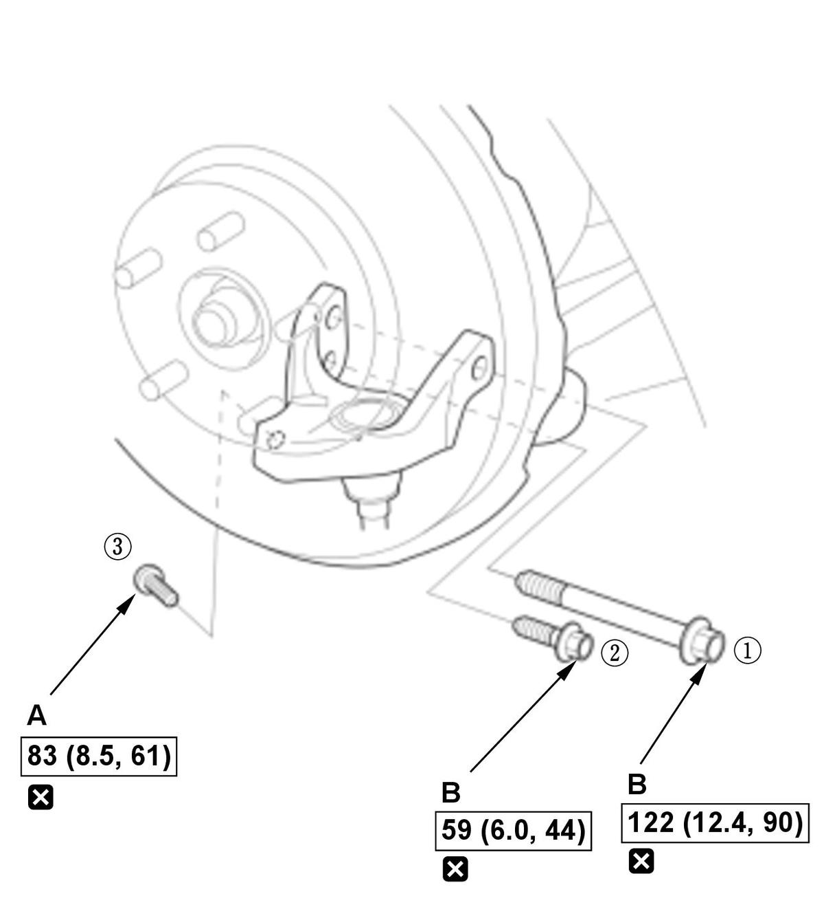

Front Housing Bracket Ball Joint Removal and Installation (Type-R) (2017 2018 2019 2020 2021): Installation
NOTE: How to read the torque specifications .
- Ball Joint - Install
1. Clean the mating surfaces of the new ball joint (A) and the housing bracket (B). 2. Position the installation receiver, the adapter E, and the C-frame OTC7248 to the ball joint as shown.
3. Securely clamp the C-frame in a bench vise with a shop towel wrapped around the C-frame.
4. Tighten the pressure bolt (C) of the C-frame until the ball joint shoulder is fully seated in the housing bracket.
NOTE: When tightening the pressure bolt, make sure the tools are properly aligned with the housing bracket and the ball joint.
5. Using a yellow oil-based paint marker, paint a mark (A) on the top of the ball joint as shown.
NOTE: The paint mark is used to identify a housing bracket that has had the ball joint replaced. - Housing Bracket - InstallFig 1: Front Housing Bracket Mounting Bolts With Tightening Sequence And Torque Specifications (Type-R - 2017-21)

Courtesy of HONDA, U.S.A., INC.1. Loosely install the new TORX bolt (A), then tighten the new mounting bolts (B) and the new TORX bolt in the numbered sequence shown. - Lower Arm - Connect
1. Connect the housing bracket ball joint to the lower arm . - Front Suspension Stroke Sensor - Connect
1. Connect the front suspension stroke sensor to the lower arm . - Front Wheel - Install
- Wheel Alignment - Check